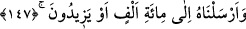
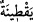
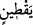

gövdesiz olarak yerde yayılmış durumda olan bitkilerin hepsine şâmil olan küllî bir
mefhum için vaz’ edilen bir lafızdır. “ kelimesinin müfredi “ dir. Kâmûs’ta
der ki: “, dik durmayan, yatık vaziyetteki bitki türüne denir. “ ise yaş ve taze
kabaktır. Gövdesiz bitki demektir.” “ kelimesi genel olduğu halde burada onun bir
cüz’ü olan kabak mânâsında kullanılmıştır. İbn Şeyh der ki: Arap kelamında gövdesi
olup yeryüzüne yayılmayan her bitkiye “ yani ağaç denildiği halde burada gövdesi
olan ve yeryüzüne yayılan kabağa da “ağaç” denilmesi Allah Teâlâ’nın Yunus (a.s.)’ın
üzerine gölgelik ve çardak gibi bir ağaç bitirip o ağacın altında da kabak bitirmiş
olmasındandır. Zira kabak sarmaşık gibi ağacın bütün dallarına sarılmış sanki o ağaç
bir kabak ağacı olmuştur. Burada ağacın ve kabağın bitirilmesi Yunus (a.s.)’ın bir
mucizesidir. Yunus (a.s.) bu ağacın gölgesinde gölgelenmiş yapraklarıyla da sinekten
korunmuştur. Zira diğer yeşilliklere geldiği gibi sinek, kabak ağacına ve kabak
yaprağına gelmez. Balık Yunus (a.s.)’ı sahile attığı zaman sinekten dahi ciddi rahatsız
olup elem ve ızdırap duyacak şekilde cildi değişmiş, gayet hassas bir durumda idi. İşte
bu kabak ağacının yaprakları Yunus (a.s.)’a sütre oldu ve Yunus (a.s.)’ı güneşten,
rüzgardan, sinek ve benzeri haşeratın ezasından korudu. Hz. Peygamber (s.a.)’e
“Elbette sen kabağı seviyorsun değil mi?” diye sordular. Hz. Peygamber (s.a.) “Evet
o kardeşim Yunus’un ağacıdır” buyurdular.”[220] Ebû Yusuf’tan rivâyete göre der ki:
“Bir adam Rasûlullah (s.a.) kabağı severdi” dese; diğeri de küçümseyip aşağılamak
kastıyla “Ben sevmiyorum” dese kâfir olur. Ancak böyle bir kastı yoksa kâfir olmaz.
Son dönem âlimlerinden bazıları bu görüştedir.
Rivayete göre Allah Teâlâ Yunus (a.s.)’a bir dağ keçisi hazırladı. Bu keçi sabah
akşam sahile Yunus (a.s.)’un yanına geliyor ve Yunus (a.s.) onun sütünden içiyordu.
Nihâyet eti sertleşti, saçı bitti ve tekrar eski kuvvetine kavuştu.
147. Onu, yüz bin veya daha çok kişiye peygamber olarak gönderdik.
“Onu” kendilerinden kaçmış olduğu kavminden “yüz bin veya” görünüşte “daha çok
kişiye peygamber olarak gönderdik.”
Allah Teâlâ önce Yunus (a.s.)’ın mutlak mânâda gönderilmiş bir peygamber olduğunu
haber vermiş (139. âyet) ve ardından bu âyette (147. âyet) de onun (a.s.) kavminden
kalabalık bir topluluğa gönderildiğini bildirmiştir. Birincisinde mutlak olarak
peygamberliğinden bahsedilmekte, ikincisinde ise bütün kavmine peygamber olarak
gönderildiği ifade edilmektedir. Bu iki ayet arasında anlatılanlar ise Yunus (a.s.) ile
kavmi arasında geçen ve kaçışa sebep olan macerayı hatırlatmak içindir. Yani Yunus
(a.s.)’ın kavmini Allah’ın azabına karşı uyarması, azabın geleceği vakti tespit ve tayin